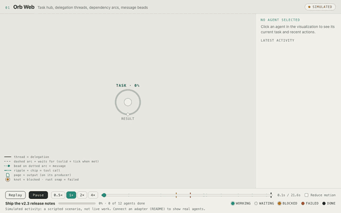
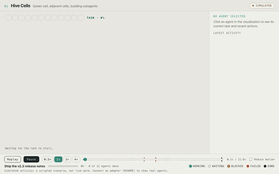
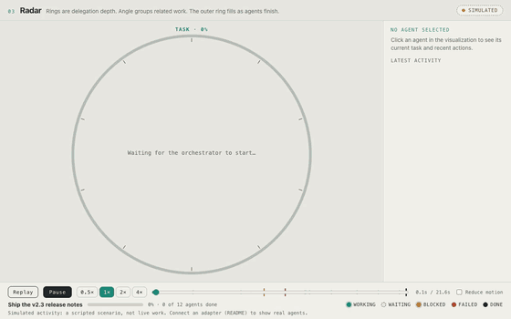
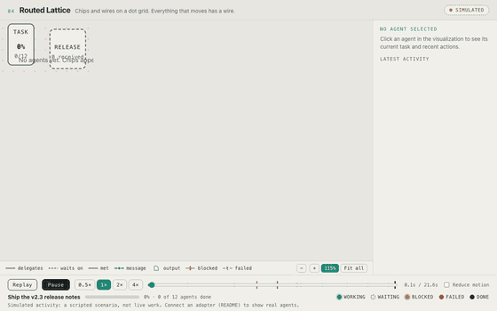
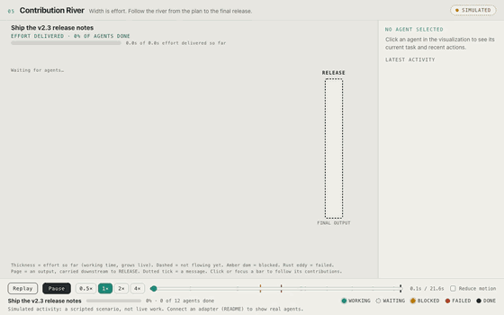
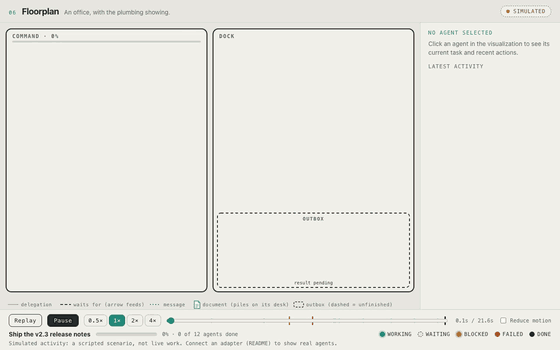
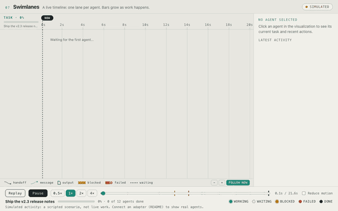
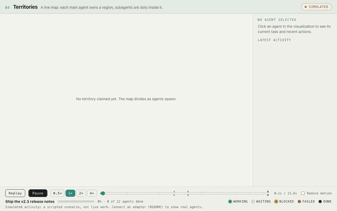
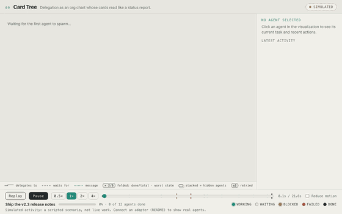
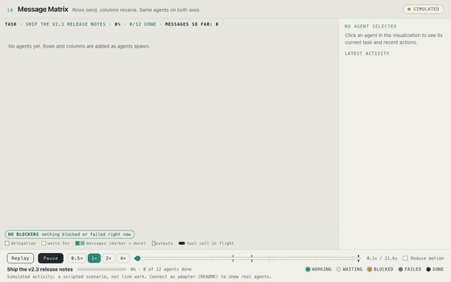

Agent Activity Lab
SIMULATED Ten runnable designs for watching AI agents work: who is doing what, who handed work to whom, what is waiting or blocked (and why), what failed and recovered, and what came out at the end.
All ten replay the same made-up task so you can compare them fairly. Pause, replay, change speed, scrub the timeline, and click any agent to inspect it. Nothing here is live work unless you connect real events, and every design shows a badge that says which it is.
Pick one

Start your own from this
node tools/pick.mjs 01-orb-web ../my-agent-view
Start your own from this
node tools/pick.mjs 02-hive-cells ../my-agent-view
Start your own from this
node tools/pick.mjs 03-radar ../my-agent-view
Start your own from this
node tools/pick.mjs 04-routed-lattice ../my-agent-view
Start your own from this
node tools/pick.mjs 05-contribution-river ../my-agent-view
Start your own from this
node tools/pick.mjs 06-floorplan ../my-agent-view
Start your own from this
node tools/pick.mjs 07-swimlanes ../my-agent-view
Start your own from this
node tools/pick.mjs 08-territories ../my-agent-view
Start your own from this
node tools/pick.mjs 09-card-tree ../my-agent-view
Start your own from this
node tools/pick.mjs 10-message-matrix ../my-agent-viewThe combined viewer
One shell with Cards, Timeline, Result and a Tool stream view, plus a “Needs you” strip for blocked and failed agents. Run node shared/adapter-server.mjs, then open /app/index.html. Details.
Start your own
No build step and no dependencies, only Node 18+ for the small local server.
git clone https://github.com/pomegranate692-creator/agent-activity-lab cd agent-activity-lab node tools/pick.mjs 09-card-tree ../my-agent-view cd ../my-agent-view && npm start # http://127.0.0.1:7777
Which should you pick? See COMPARISON.md. Short version: Card tree for everyday status, Swimlanes for seeing when things happened, Contribution river for how it all fed the result.